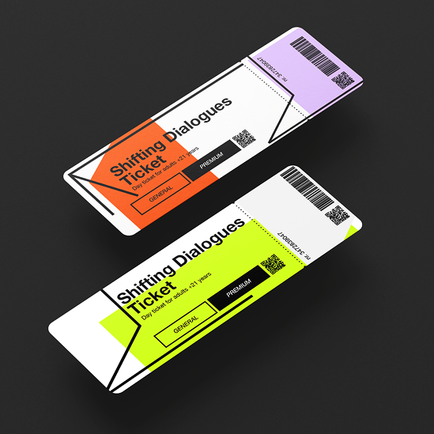

VISUAL
IDENTITY
FOR FUTURE THINKING
FESTIVAL
As part of a course, we were asked to design a visual identity
for an imaginary 3-day festival. Shifting Dialogues is a
festival that brings people, disciplines, and ideas together
through a change of perspective and open dialogue, with the
aim of moving from exchange to joint action and new visions
for the future.
/ 11 - 2025
Signage, posters, flyers, tickets, merchandise, and much more can be effortlessly adapted using this flexible design system.
By deliberately playing with perspective, dynamic, almost unreal forms emerge, forming the core of the visual identity.
PROCESS & SKETCHES

The visual identity is based on the concepts of
perspective, space, movement, transformation, and connection.
It originates from the idea of a “dissolving space,”
visualised through a 3D cube whose lines are
opened, divided, and set in motion.
Supervision: Marc Damm